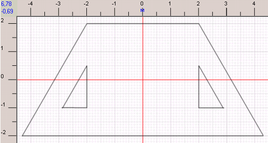
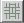
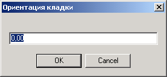
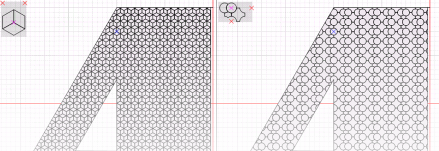
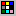
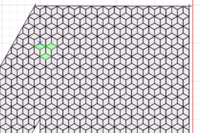
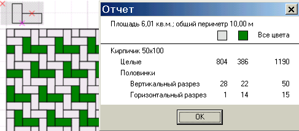

Схема работы такая:
1. Нарисовать участок. Участок рисуется абсолютно аналогично плитке. Нужно использовать кнопки на панели инструментов

2. Нажмите на панели инструментов кнопку

3. Выбрать узор. Кнопка .
4. Если нужно, задать ориентацию - угол отклонения узора от горизонтальной оси против часовой стрелки. Кнопка

5. Нажать кнопку Заполнить . Участок заполнится плиткой. Это может продолжаться длительное время.

6. Если нужно изменить цвет плиток, нажмите кнопку Отметить плитку

Нажмите правой кнопкой мышки на чертеже и из появившегося меню выберите пункт Изменить цвет. Появится диалог, в котором нужно выбрать необходимый цвет.

|
Примечание. В разделе "Дополнительные цвета" первый цвет - это цвет плитки по умолчанию. То есть, если надо сделать плитку "нецветной", то нужно назначить ей именно этот цвет.
|
Теперь проект выглядит так:

В том же меню можно сбросить выделение плиток. Вместо выпадающего меню можно воспользоваться кнопками на панели инструментов  и
Еще несколько возможностей нанести цвет на узор.
1. Отметить на участке несколько плиток. Нажать кнопку Размножить выделение . Программа возьмет за точку отсчета плитку, выделенную первой по счету и попытается продолжить цепочку плиток в направлениях от первой до остальных отмеченных. Чтобы понять этот механизм, проделайте следующее:
Отметьте на участке три плитки, как на рисунке ниже, причем первой отметьте левую нижнюю плитку.

Теперь нажмите . Результат будет выглядеть так:

Теперь можно воспользоваться кнопкой Изменить цвет .
2. Нажать кнопку Отметить плитку
Можно получить отчет о количестве использованных плиток с разделением по цветам: меню Участок -> Отчет .

Можно изменить ориентацию, начальную точку, даже узор, и снова заполнить участок.
Когда требуемый результат достигнут, проект можно сохранитьчерез меню или кнопку
На этом мы закончим ознакомление с программой. Информации, изложенной в этой главе, достаточно, чтобы понять возможности программы и создавать простые проекты.
Подробное описание работы с редакторами плиток, узоров и проектов можно найти в главах Редактор плиток, Редактор узоров, Разработка проектов.